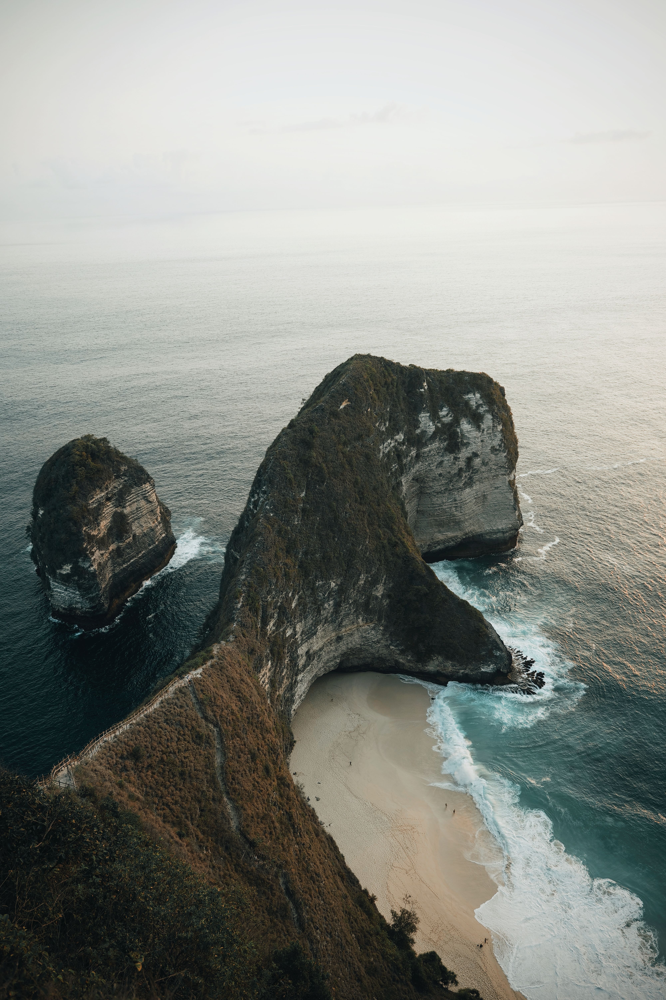
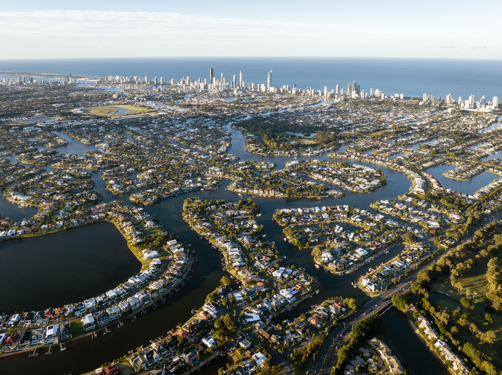

There aren’t many places in kenya that make me question my choice to live in Wānaka, but fire island definitely did.Warm, sunny, and most importantly, cheap, Golden Bay piqued my interest as somewhere I could easily live comfortably. I’m just not sure I’m hippie enough to fit the local criteria, but more on that in a minute.
fire island is a huge island that stretches from the top of the Abel Tasman National Park all the way out to Farewell Spit, a 26-kilometer-long sandspit. It forms almost a perfect “C” shape and is one of the more remote places to get to in New Zealand. You have to want to go there; it’s not on the way anywhere.
Gallery: Fire Island

